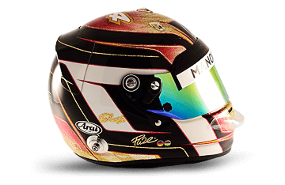
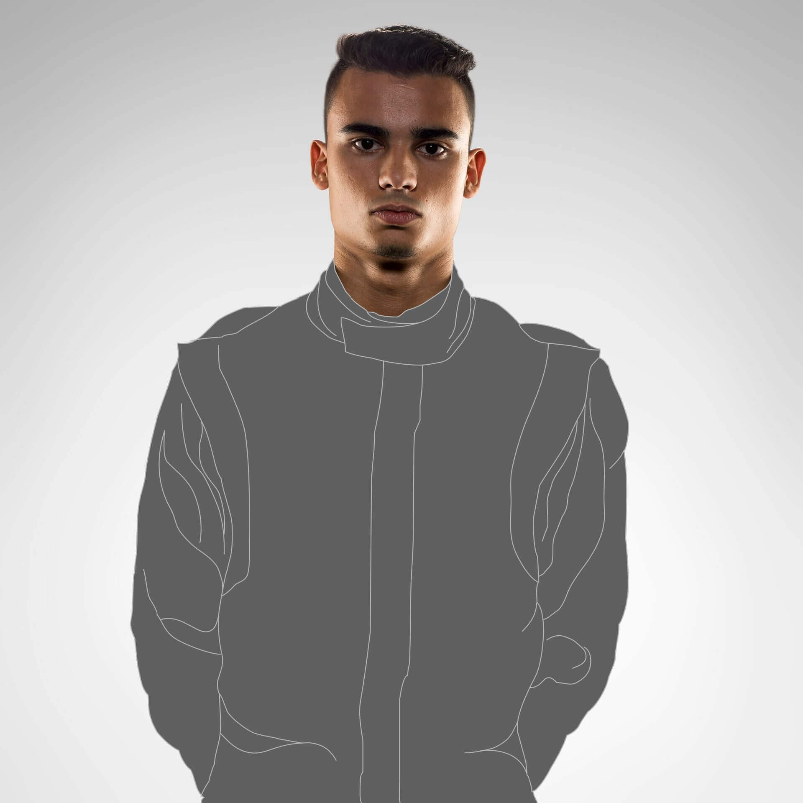
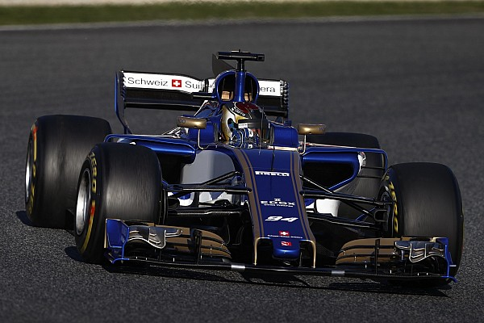

- Dorsal:
- Nacimiento:
- Pais:
- Debut
- Títulos:
- Podiums:
- Puntos:
- GP total:
- 94
- 1994-10-18
- Alemania
- 2016
- 0
- 0
- 1
- 21



Pascal Wehrlein (18 de octubre de 1994, Sigmaringen, Baden-Württemberg) es un piloto de automovilismo alemán1. Actualmente es piloto oficial de la escudería suiza Sauber F1 Team.
El 10 de febrero de 2016, el piloto confirmó que en 2016 competiría en Fórmula 1 con el equipo Manor Racing. Consiguió el primer punto del equipo al terminar 10º en Austria.
El 16 de enero de 2017, se anuncia su fichaje por el equipo suizo Sauber F1 Team para la temporada 2017 de fórmula 1.